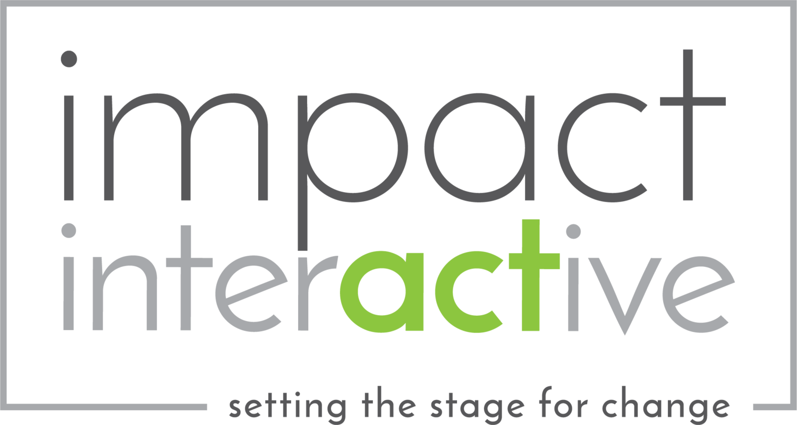

My team tackles important topics through engaging, effective theatre-based training. I work with your organization to create powerful learning experiences that stimulate dialogue, challenge assumptions, and create practical strategies for change.